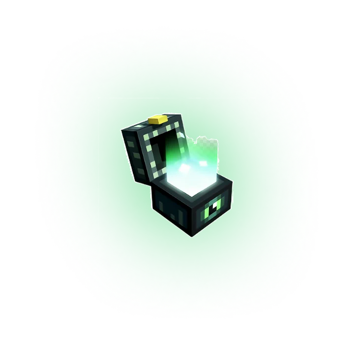

30 фриспинов
Стартовый пакет бросков в Falling Pickaxe при первом заходе — без депозита.
Falling Pickaxe — instant-игра от студии Pixmove: кирка падает в шахту, ломает блоки, запускает каскады и собирает множители до ×5000. Играть в Falling Pickaxe можно онлайн в браузере и в Telegram, а демо запускается прямо здесь — без регистрации. Новому игроку — 30 фриспинов при первом заходе.
Falling Pickaxe online · demo без регистрации · раунд 10–20 секунд · 18+

Falling Pickaxe вышла у провайдера Pixmove в июне 2026 года и за лето стала самой обсуждаемой instant-игрой в русскоязычных стримах. Формула простая: вместо барабанов — шахта из блоков, вместо спина — бросок кирки. Кирка летит вниз, крошит камень, уголь, железо, золото и алмазы, а каждый разрушенный слой обрушивает верхние блоки и продлевает раунд.
Выигрыш в Falling Pickaxe складывается из стоимости добытых блоков, умноженной на множитель раунда. Множитель растёт с глубиной и с каждым каскадом, а по пути встречаются TNT, апгрейды кирки до алмазной, сундуки с фриспинами и увеличительные стёкла, удваивающие ценность руды. Из этого и получаются заносы до ×5000, ради которых игру и крутят.
В рунете игру ищут как Falling Pickaxe game, Falling Pickaxe online и по-русски — «падающая кирка». Это одна и та же игра Pixmove, и открывается она по кнопке «Играть» выше: там демо, ставки в рублях и стартовые фриспины.
Раунд Falling Pickaxe длится 10–20 секунд и целиком зависит от того, что кирка встретит на пути. Вот из чего складывается результат.
Стартовый пакет бросков в Falling Pickaxe при первом заходе — без депозита.
Процент к первому пополнению плюс фриспины — активируется в кассе перед депозитом.
Периоды с повышенными множителями в Falling Pickaxe — расписание в Telegram-канале площадки.
Бонусы начисляются после регистрации; выигрыш с фриспинов отыгрывается по стандартному вейджеру и выводится в рублях.
Открой Falling Pickaxe по кнопке «Играть» — в браузере или в Telegram
Выбери ставку в рублях или демо-режим на виртуальный баланс
Брось кирку — каскады, TNT и апгрейды отработают сами
Забирай выигрыш и фриспины из сундуков — раунд занимает секунды
В Falling Pickaxe нет решений по ходу раунда — вся стратегия в размере ставки и длине сессии. Обычный подход: ровная ставка 1–2% от банка и лимит на сессию; охота за глубокими раундами с TNT — минимальной ставкой и заранее заданным числом попыток. Демо на этой странице позволяет прогнать любой вариант на сотне бросков и увидеть, как часто кирка доходит до алмазов при выбранной ставке.
Игра одинаково работает на компьютере и на телефоне: интерфейс вертикальный, кнопка броска под большой палец, а аккаунт общий для сайта и Telegram-бота — баланс и фриспины переносятся между ними.
Falling Pickaxe demo запускается прямо здесь: официальная демо-версия Pixmove на виртуальный баланс, без регистрации и депозита. Механика, блоки, TNT и множители — те же, что в игре на деньги; отличается только баланс. Окно можно свернуть и вернуться — прогресс сохранится.
FALLING PICKAXE ЖДЁТ
Кирка, шахта и множители до ×5000. 30 фриспинов при первом заходе — бросай, не откладывая.
ИГРАТЬ В FALLING PICKAXE30 ФРИСПИНОВ
Стартовый пакет бросков закреплён за тобой.
Забери его при первом заходе в Falling Pickaxe.
УЖЕ В ПЛЮСЕ?
На реальном счёте это были бы деньги. При первом заходе — 30 бесплатных бросков кирки и бонус на депозит.
ЗАБРАТЬ ФРИСПИНЫУХОДИШЬ В ПЛЮСЕ?
В демо выигрыш остаётся на экране. На реальном счёте — 30 фриспинов при первом заходе: те же броски, но за деньги.
ЗАБРАТЬ 30 ФРИСПИНОВ